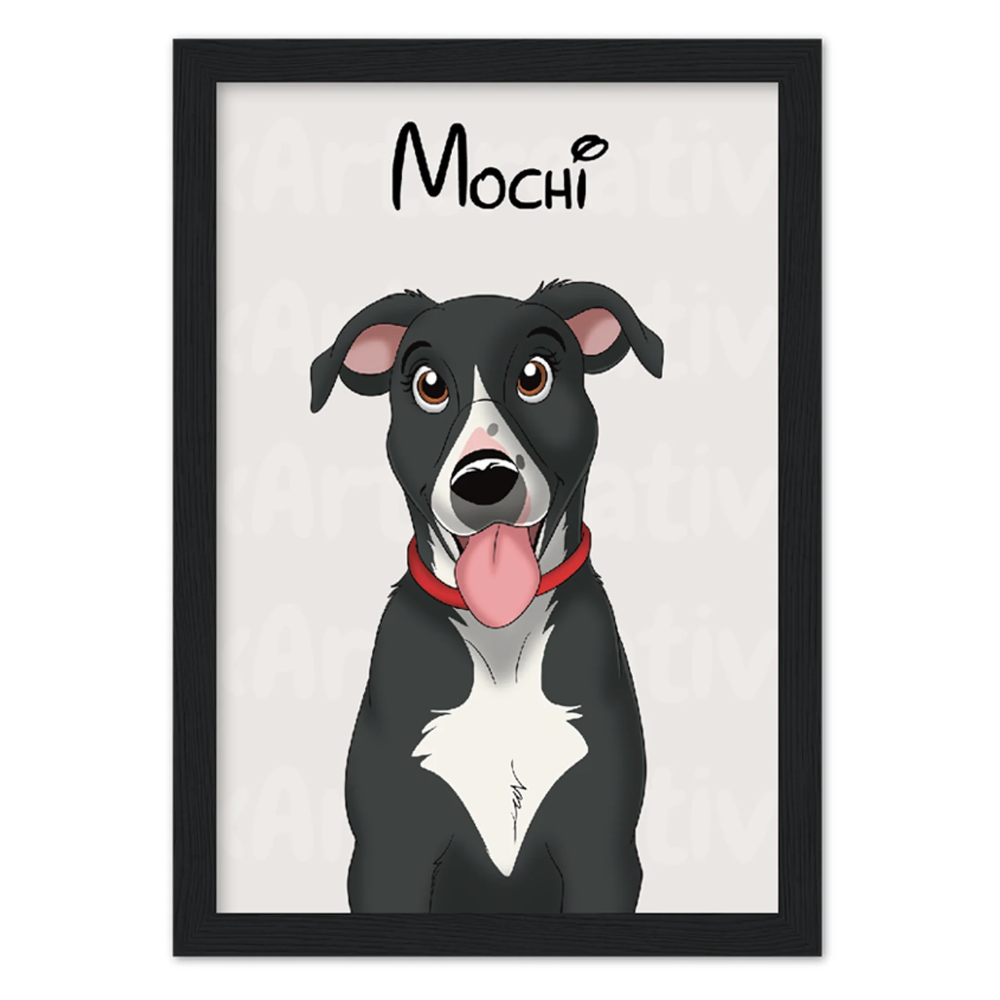
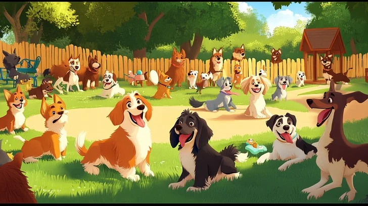
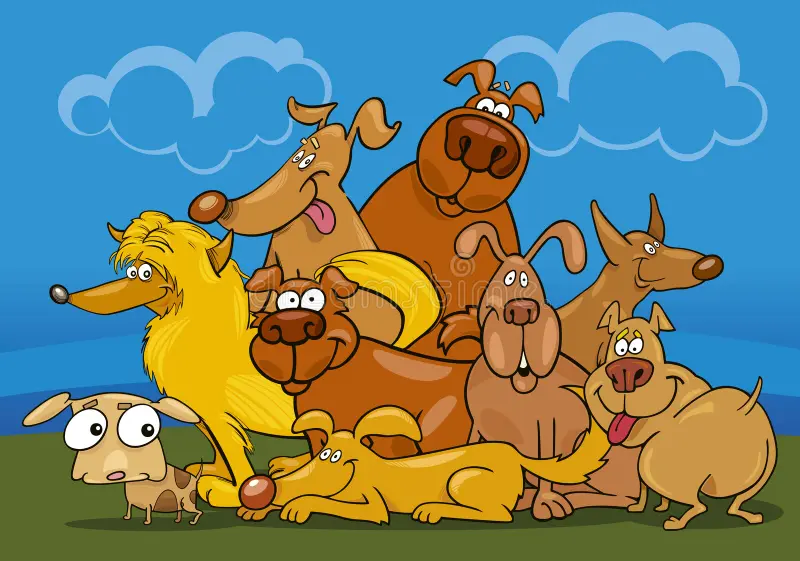
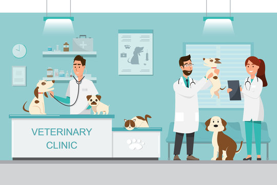
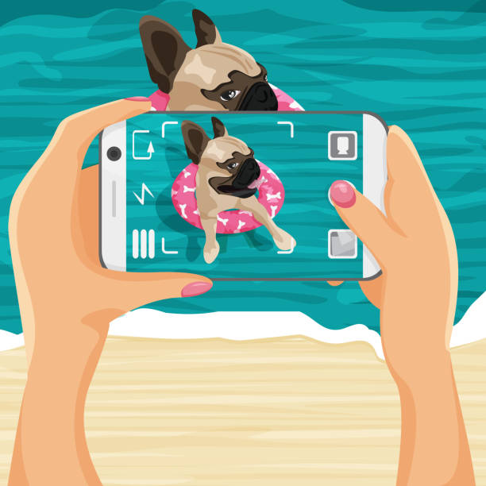
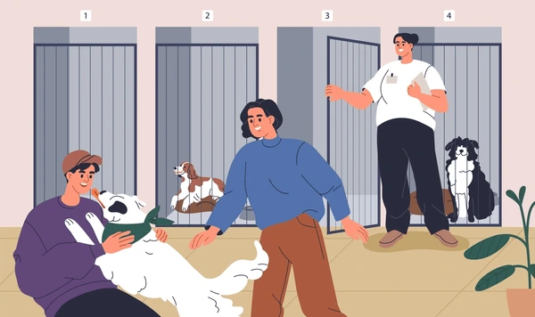

Avant de chercher un match, assure-toi que le profil de ton animal est complet — une belle photo, sa race, son âge et sa personnalité. Les profils complets ont plus de chances d'être swipés !

Après un match, organise la première rencontre entre les animaux dans un parc ou un espace ouvert. C'est plus sûr et moins stressant pour eux.

Certaines races s'entendent mieux que d'autres. Renseigne-toi sur le caractère et les besoins de la race de l'autre animal avant d'organiser une rencontre.

Avant toute rencontre avec un autre animal, vérifie que les vaccins de ton animal sont à jour. C'est une responsabilité envers les autres propriétaires.

Évite les photos floues ou trop anciennes. Une photo récente et de bonne qualité donne confiance aux autres propriétaires et augmente tes chances de matcher !

Avant la rencontre, discutez du comportement de vos animaux — est-il joueur, timide, agressif avec les inconnus ? Une bonne communication évite les mauvaises surprises.
